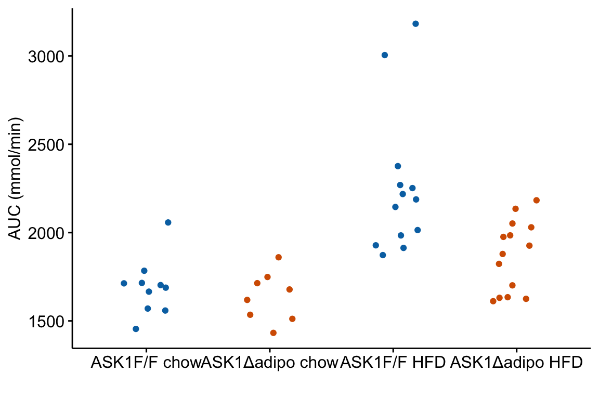
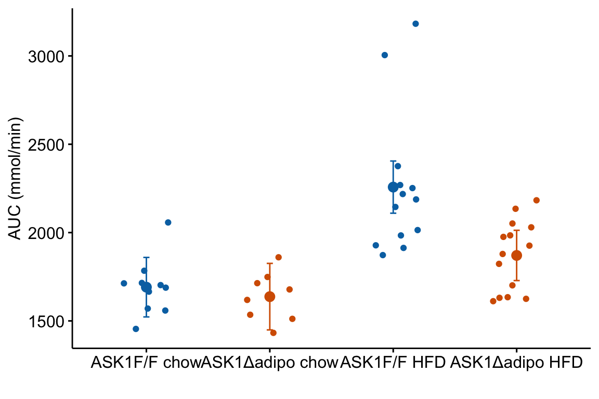
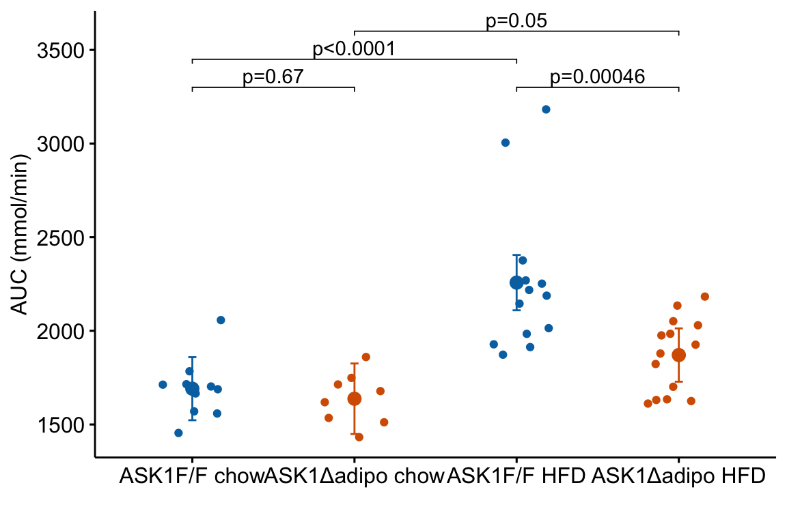
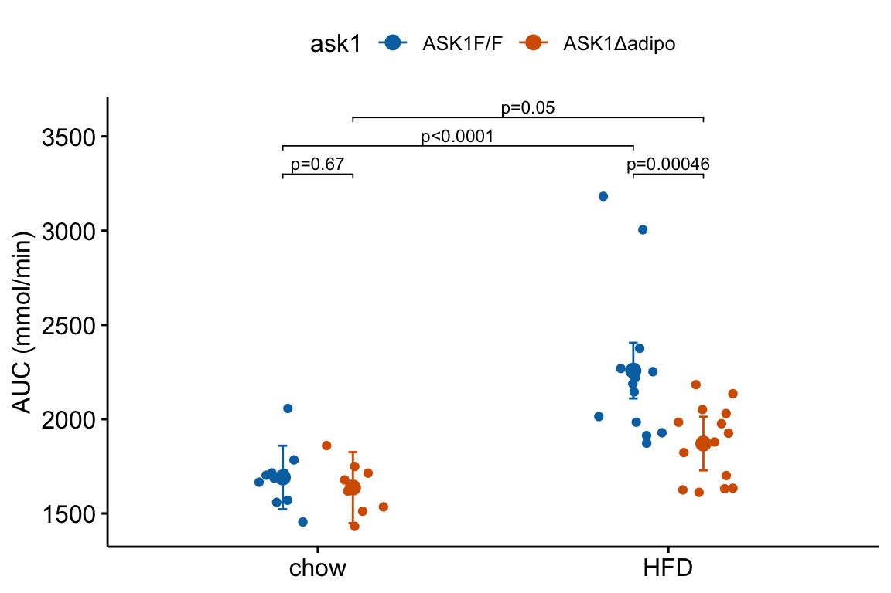
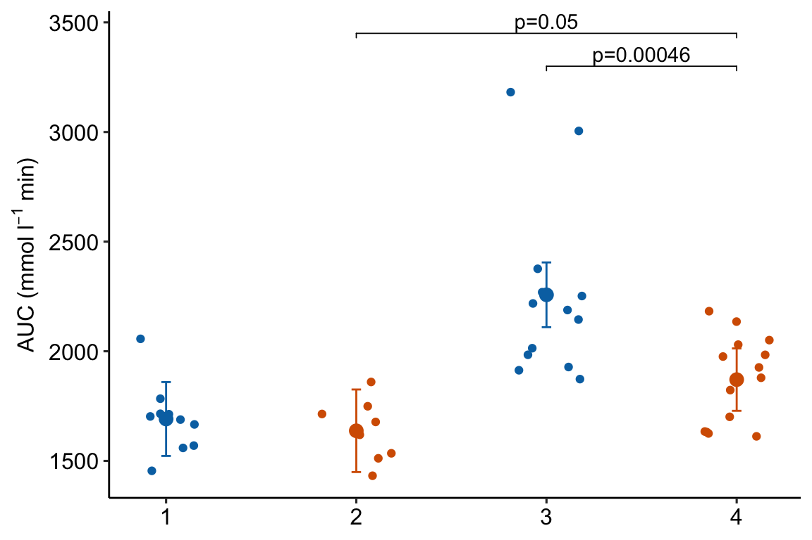
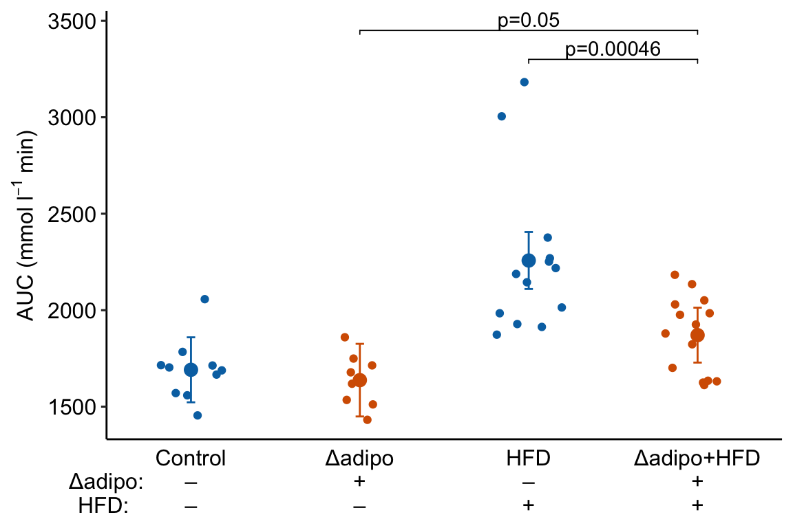
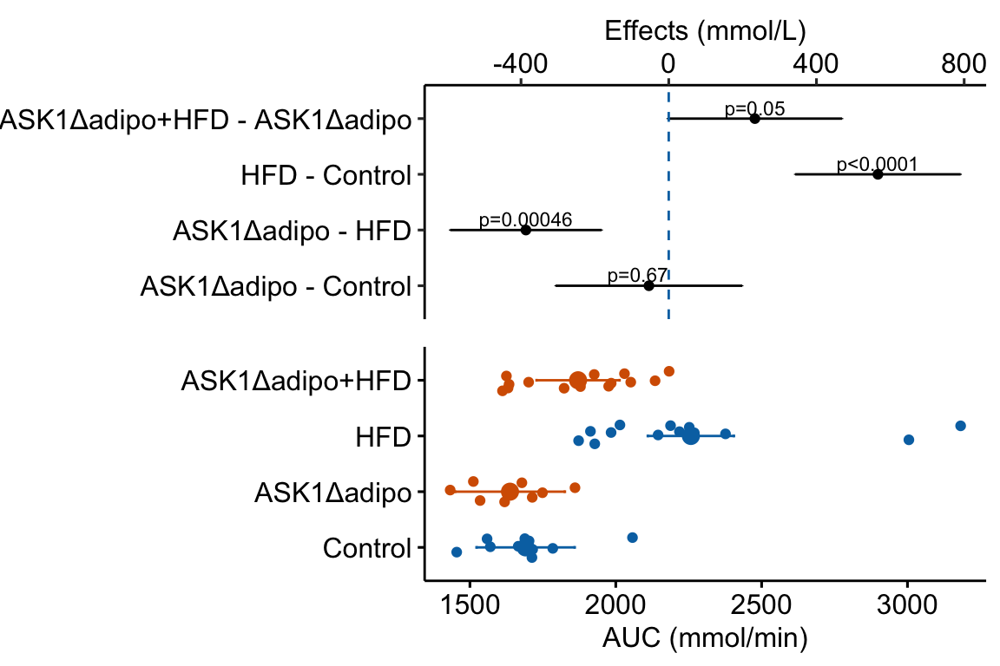
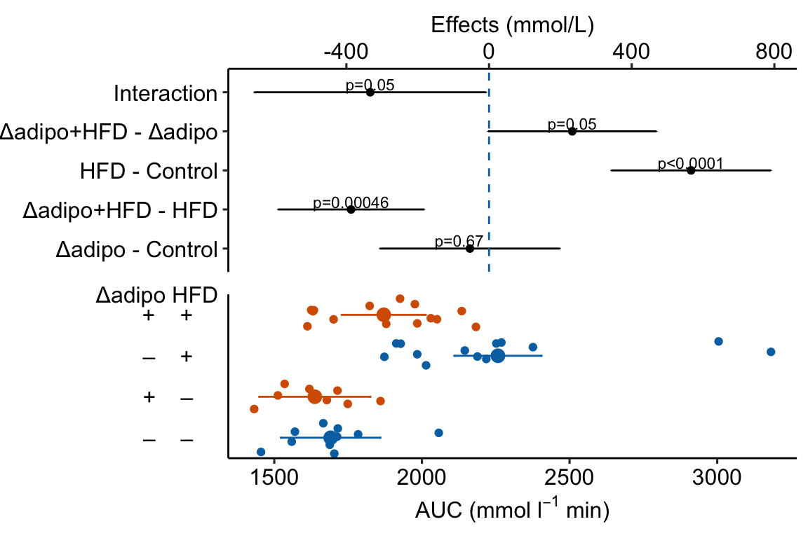

Chapter 4 Plotting Models
So, along the lines of Sarah Susanka’s “Not So Big House,” Kolbert asks the group, “What would a Pretty Good House look like?” – Michael Maines2
Plots should be the focus of both the reader and researcher. Instead of mindless plotting, a researcher should ask a series of questions of every plot
- What is the point of each element in a plot?
- Are these the points that I most want to communicate?
- Are there better practices for communicating these points?
- Are the points that I want to communicate that are not covered by these elements?
The answer to these questions should inform what is and what is not plotted. The result is a pretty good plot. The idea of a pretty good plot is borrowed from the “pretty good house” concept that grew out of a collaborative group of builders and architects in Northern New England. The “pretty good house” combines best practices for building an earth friendly, high performance home at a reasonable cost. There is no pretty good house governing body that awards certificates of achievement but, instead, a set of metrics and a collection of building practices that can achieve these.
A typical pretty good plot contains some combination of
- Modeled effects with confidence intervals. “Effects” are differences between groups in response to treatment – the raison d’etre of an experiment.
- Modeled means and confidence intervals.
- Individual data points or a summary distribution of these.
4.1 Pretty good plots show the model and the data
The data to introduce best practices in plotting come from Figure 2d and Figure 2e from “ASK1 inhibits browning of white adipose tissue in obesity”, introduced in the introductor chapter (Analyzing experimental data with a linear model)
4.1.1 Pretty good plot component 1: Modeled effects plot
Figure 4.1: Effects plot of glucose AUC data
Biologists infer the biological consequences of a treatment by interpreting the magnitude and sign of treatment “effects”, such as the differences in means among treatment levels. Why then do we mostly plot treatment level means, where effect magnitude and sign can only be inferred indirectly, by mentally computing differences in means? A pretty good plot directly communicates treatment effects and the uncertainty in the estimates of these effects using an effects plot.
Figure ?? is an effects plot of the linear model fit to the glucose tolerance data. The effects plot is “flipped”. The y-axis is the categorical variable – it contains the labels identifying the pair of groups in the contrast and the direction of the difference. In addition to the pairwise comparisons, I include the interaction effect on the y-axis. The x-axis is the continuous variable – it contains the simple effects, which is the difference in means between the two groups identified by the y-axis labels. Additionally, the y-axis includes the estimate of the \(diet \time genotype\) interaction effect. The bars are 95% confidence intervals of the effects (either simple effects or interaction effect), which is the range of values that are compatible with the observed data at the 95% level.
We can use the effects and CIs of the effects to evaluate the treatment effects. For example, when on a high fat diet (HFD), the mean, post-baseline plasma glucose level in the ASK1\(\Delta\)adipo is 3.5 mmol/L less than that for the control (ASK1F/F). Differences less than 5.3 mmol/L less than ASK1F/F levels or greater than 1.7 mmol/L less than ASK1F/F levels are not very compatible with the data. It is up to the research community to decide if 1.7 mmol/L or 3.5 mmol/L differences are physiologically meaningful effects.
4.1.2 Pretty good plot component 2: Modeled mean and CI plot

Figure 4.2: Response plot
The response plot in Figure 4.2 “shows the model” – by this I mean the plot shows the modeled means, represented by the large circles, the modeled 95% confidence intervals of each mean, represented by the error bars, and the model-adjusted individual response values, represented by the small colored dots. What do I mean by modeled means, modeled error intervals, and model-adjusted responses?
| ask1 | diet | N | Sample mean | Sample sigma | Sample SE | Model mean | Model sigma | Model SE |
|---|---|---|---|---|---|---|---|---|
| ASK1F/F | chow | 10 | 14.35 | 1.48 | 0.47 | 14.35 | 1.85 | 0.59 |
| ASK1F/F | HFD | 13 | 19.40 | 3.60 | 1.00 | 18.63 | 1.85 | 0.52 |
| ASK1Δadipo | chow | 8 | 13.87 | 1.26 | 0.44 | 14.01 | 1.85 | 0.66 |
| ASK1Δadipo | HFD | 14 | 15.92 | 1.73 | 0.46 | 15.53 | 1.85 | 0.49 |
- The modeled means and error intervals are estimated from the statistical model. Many published plots show the sample means and sample error intervals, which are computed within each group independently of the data in the other groups and are not adjusted for any covariates or for any hierarchical structure to the data.
- A modeled mean will often be equal to the raw mean, but this will not always be the case. Here, the modeled means for the non-reference groups in Figure ?? do not equal the sample means because the modeled means are adjusted for the baseline measures of glucose (Table ??) (specifically, the modeled means are conditional on the baseline being equal to the mean of the baseline in the reference group).
- For most of the analyses in this text, modeled error intervals are not the same as the sample error intervals and are commonly conspicuously different. For the glucose tolerance data, the modeled error intervals are calculated from a pooled estimate of \(\sigma\) while the sample error intervals are estimated from sample-specific estimates of \(\sigma\) (Table ??).
- Model-adjusted responses are responses that are adjusted for covariates in the model. If there are no covariates in the model, the model-adjusted responses are the same as the raw response. In the glucose tolerance data, the model-adjusted responses are the modeled, individual response measures if all individuals had the same baseline glucose (the covariate).
Modeled means, error intervals, and responses are not commonly plotted but it is these values that are consistent with our inferences from the statistical model. There are many data sets in experimental biology where a plot of sample means, error intervals, and responses give a very distorted view of inference from the model.
The response plot in Figure 4.2 also “shows the data” by plotting response values as “jittered” dots. Showing the data
- allows the reader to get a sense of the underlying sample size and distribution including outliers, which can be used to mentally model check the published statistical analysis. Adding a box plot, violin plot, or dot plot augments the communication of the distributions if there are enough data to justify the addition.
- allows a reader to see the overlap in individual responses among groups and to evaluate the biological consequences of this overlap.
4.1.3 Combining Effects and Modeled mean and CI plots – an Effects and response plot.

Figure 4.3: Effect of diet and ASK1 deletion on post-baseline glucose. Top: effects plot of 2 X 2 simple effects (difference in means) and of the diet X genotype interaction. Bars are 95% confidence intervals of the effects. Unadjusted p-values from the linear model are given. Bottom: response plot of the means and 95% confidence interval of each diet X genotype combination.
Combining the effects and response plots into a single plot is an easy solution to issues that arise if only one or the other is used. What are these issues?
While a response plot like that in Figure 4.2 is standard in biology, it fails to show the effects, and the uncertainty in the effects, explicitly. To infer the effects from the plot, a reader must perform mental math – either compute the difference or the ratio between pairs of means. This mental math is easy enough if the comparisons are between individual treatment levels but much harder if the comparisons are between pooled sets of treatment levels, for example in a factorial experimental design. The mental math that is excessively difficult is the reconstruction of some kind of error interval of the contrasts, for example the 95% confidence intervals in Figure ?? and it is these intervals that are necessary for a researcher to infer the range of biological consequences that are compatible with the experiment’s results. The inclusion of the p-values for all pairwise comparisons in a response plot gives the significance level of these contrasts, but of the kinds of summary results that we could present (contrasts, error intervals, p-values), the p-values are the least informative.
Effects plots are very uncommon in most of biology outside of meta-analysis and clinical medicine more generally. An effects plot alone fails to communicate anything about the sample size or conditional distribution of the data. Equally important, response values are often meaningful and researchers working in the field should be familiar with usual and unusual values. This can be useful for interpreting biological consequences of treatment effects but also for researchers and readers to asses the credibility of the data (for example, I have twice, once in my own data and once in a colleagues data, found mistakes in the measurement of an entire data set of response variable because the plotted values weren’t credible).
4.1.4 Some comments on plot components
- Several recent criticisms of bar plots have advocated box plots or violin plots as alternatives. Box plots and violin plots are useful alternatives to jittered dots if there are sufficient data to capture the distribution but I wouldn’t advocate replacing the plot of modeled means and confidence intervals with box or violin plots, as these communicate different things. More importantly, box and violin plots do not communicate the treatment effects.
- Almost all plots in biology report the error bars that represent the sample standard error. As described above, sample standard error bars do not reflect the fit model and can be highly misleading, at least if interpreting as if they do reflect the model. Also, sample standard error bars can explicitly include absurd values or imply absurd confidence intervals. For example, I sometimes see standard error bars cross \(y=0\) for a response that cannot be negative, such as a count. Even if the standard error bar doesn’t cross zero, it is common to see standard error bars that imply (but do not explicitly show) 95% confidence intervals that cross zero, again for responses that cannot be negative. A standard error bar or confidence interval that crosses zero implies that negative means are compatible with the data. This is an absurd implication for responses that cannot have negative values (or are “bounded by” zero). Explicit or implicit error bars that cross zero are especially common for count responses with small means. If a researcher plots confidence intervals, these should be computed using a method that avoids absurd implications, such methods include the bootstrap and generalized linear models.
- Significance stars are okay, the actual p-value is better, effects plots are best. Many researchers add star symbols to a plot indicating the level of significance of a particular paired comparison. Stars are okay in the sense that there is no inferential difference between \(p = 0.015\) and \(p = 0.045\). There’s also no inferential difference between \(p = 0.0085\) and \(p = 0.015\), which highlights the weakness of -chotomizing any continuous variable. For this reason, a better, alternative would be to add the actual p-value (as above). A more serious criticism of stars is that it encourages researchers and readers to focus on statistical significance instead of effect size and uncertainty. A more valuable alternative, then, is to report the effects and uncertainty in an effects plot or a combined effects-and-response plot.
4.2 Working in R
A reasonable goal of any research project should be a script to generate the final plots entirely within the R environment and not rely on external drawing software to add finishing features. This section covers some of the basics of using R packages to create plots. Later chapters cover some of the details that are specific to the analyses in that chapter.
ggplot2 is one of the major plotting environments in R and the one that seems to have the strongest following, especially among new R users. ggplot2 has the ability to generate extremely personalized and finished plots. However, ggplot2 has a long learning curve and until one is pretty comfortable with its implementation of the grammar of graphics, creating a plot with multiple layers (mean points, error intervals, raw data points, p-values, text annotations) and modified aesthetics (axis text, point colors) can often require many hours of googling.
ggpubr is an extension to ggplot2 (it calls ggplot2 functions under the hood) and provides many canned functions for producing the kinds of ggplots that are published in biological journals. With one line of script, a researcher can generate a publishable plot.
ggplot_the_model and related functions in this chapter are my attempts to create a simple function for creating publication ready plots that highlight effect size and uncertainty.
Some of the basics for using ggpubr, ggplot2, and ggplot_the_model are outlined here. More specific examples are in each chapter.
4.2.1 Source data
Data source: ASK1 inhibits browning of white adipose tissue in obesity
The source data are that for Figure 2E. The response is \(glucose\_auc\) the “area under the curve” of repeated measures of blood glucose during the 120 minutes of a glucose tolerance test. Glucose AUC is a measure of glucose tolerance, the higher the area, the higher the blood glucose over the two hours, and the worse the physiological response to a sudden rise in blood glucose. There are two treatment factor variables: 1) \(Diet\), with levels “chow” and “HFD”, where “chow” is normal mouse chow and “HFD” is a high fat diet, and 2) \(ask1\), with levels “ASK1F/F” and “ASK1Δadipo” where “ASK1F/F” is the control level and “ASK1Δadipo” is the ASK1 adipose-deletion mouse described in Chapter 1.
4.2.1.1 Import
data_from <- "ASK1 inhibits browning of white adipose tissue in obesity"
file_name <- "41467_2020_15483_MOESM4_ESM.xlsx"
file_path <- here(data_folder, data_from, file_name)
# the data are in "tranposed" format -- each row contains the n
# measures of a treatment level. Read, then transpose
# to make the treatment levels the columns
fig2e_wide <- read_excel(file_path,
sheet = "Source Date_Figure 2",
range = c("A233:O236"), # lot of NA
col_names = FALSE) %>%
data.table %>%
transpose(make.names = 1) # turn data onto
# melt the four columns into a single "glucose_auc" column
# and create a new column containing treatment level.
y_cols <- colnames(fig2e_wide)
# melt
fig2e <- melt(fig2e_wide,
measure.vars = y_cols,
value.name = "glucose_auc",
variable.name = "treatment")
# create two new columns that are the split of treatment
fig2e[, c("ask1", "diet") := tstrsplit(treatment,
" ",
fixed=TRUE)]
# since glucose_auc is the only response variable in this
# data.table, omit all rows with any NA
fig2e <- na.omit(fig2e)
# View(fig2e)4.2.2 How to plot the model
The steps throughout the text for plotting the model fit to experimental data are
- fit the statistical model
- use the fit model to estimate the modeled means and confidence limits using
emmeansfrom the emmeans package. - use the
emmeansobject to estimate the contrasts of interests using thecontrastfunction from emmeans. - Plot the individual points. If covariates are in the model, use the fit model from step 1 to plot the adjusted values of the points.
- Use the values from step 2 to plot the modeled means and error intervals.
- If including p-value brackets, use the values from step 3.
If you are using ggplot_the_model functions, then steps 4-6 are done for you.
Here, I fit a linear model to the fig2e data and compute the use the emmeans and contrast functions without comment. The details of these functions are in the chapters that follow. The fit model and construction of the plots is simplified from those above.
4.2.2.1 Fit the model
The response is the glucose AUC, which is the area under the curve of the data from the glucose tolerance test. The model is a factorial linear model with ask1 genotype and diet as the two factors.
# glucose_auc is the AUC of the glucose tolerance curves computed using trapezoidal algorithm
m1 <- lm(glucose_auc ~ ask1*diet,
data = fig2e)4.2.2.2 Compute the modeled means table of estimated means and confidence intervals
Modeled means are computed by passing the model object (m1) to the emmeans function and specifying the columns containing the groups using the specs = argument`.
m1_emm <- emmeans(m1, specs = c("ask1", "diet"))
m1_emm## ask1 diet emmean SE df lower.CL upper.CL
## ASK1F/F chow 1691 83.4 41 1523 1859
## ASK1Δadipo chow 1637 93.2 41 1449 1826
## ASK1F/F HFD 2257 73.1 41 2110 2405
## ASK1Δadipo HFD 1871 70.5 41 1728 2013
##
## Confidence level used: 0.954.2.2.3 Compute the contrasts table of estimated effects with confidence intervals and p-values
Contrasts among levels, or combinations of levels, are computed by passing the emmeans object (m1.emm) to the contrast function. There are many important variations of this step. This text advocates computing planned comparisons, which requires expert knowledge and forthought. Here I limit the computation to the four simple effects (the effects of one factor in each of the levels of the other factor).
m1_simple <- contrast(m1_emm,
method = "revpairwise",
simple = "each",
combine = TRUE,
adjust = "none") %>%
summary(infer = TRUE)
m1_simple## diet ask1 contrast estimate SE df lower.CL upper.CL
## chow . ASK1Δadipo - (ASK1F/F) -53.6 125 41 -306.21 199
## HFD . ASK1Δadipo - (ASK1F/F) -386.7 102 41 -591.85 -182
## . ASK1F/F HFD - chow 566.5 111 41 342.48 790
## . ASK1Δadipo HFD - chow 233.3 117 41 -2.67 469
## t.ratio p.value
## -0.429 0.6703
## -3.808 0.0005
## 5.107 <.0001
## 1.997 0.0525
##
## Confidence level used: 0.95Notes
- I often use
m1_pairsas the name of the contrast table. Here I usem1_simpleto remind me that I’ve limited the comparison to the four simple effects. If I only compute planned comparisons, I might usem1_planned.
4.2.3 Be sure ggplot_the_model is in your R folder
If you skipped Create an R Studio Project for this textbook, then download and move the file ggplot_the_model.R into the R folder in your Project folder.
4.2.4 How to use the Plot the Model functions
The philosophy underneath these functions is to use the model fitted by the researcher to make the plots. The functions require information from three objects:
- the data frame containing the modeled data
- the modeled means and CIs from
emmeans - the modeled effects, CIs and p-values from
emmeans::contrast.
This philosophy strikes a balance between functions in which all of the statistical modeling is hidden and the researcher only sees the output and manually building ggplots. Actually, I strongly encourage researchers to learn how to build these plots and to not rely on canned functions, and I outline this after introducing the ggplot_the_model functions
These functions require the fit model object (m1), the emmeans object of modeled means (m1_emm) and the contrast object of modeled effects (m1_simple).
4.2.4.1 ggplot_the_response
For the response plot only, use ggplot_the_response.
m1_response_plot <- ggplot_the_response(
fit = m1,
fit_emm = m1_emm,
fit_pairs = m1_simple,
palette = pal_okabe_ito_blue,
y_label = expression(paste("mmol ", l^-1, " min")),
g_label = "none"
)
m1_response_plot
ggplot_the_response arguments:
fit model object from lm, lmer, nlme, glmmTMB
fit_emm object from ‘emmeans’. Or, a data frame that looks like this object, with modeled factor variables in columns 1 and 2 (if a 2nd factor is in the model), a column of means with name “emmean”, and columns of error intervals named “lower.CL” and “upper.CL”
fit_pairs object from emmeans:contrast. Or, a data frame that looks like this object.
wrap_col = NULL Not used at the moment
x_label = “none” A character variable used for the X-axis title.
y_label = “Response (units)” A character variable used for the Y-axis title. Use expression(paste()) method for math.
g_label = NULL A character variable used for the grouping variable (the 2nd factor) title. Use “none” to remove
dots = “sina” controls the plotting of individual points. sina from ggforce package. Alternatives are “jitter” and “dotplot”
dodge_width = 0.8 controls spacing between group means for models with a 2nd factor (the grouping variable)
adjust = 0.5 controls spread of dots if using dots = "sina"
contrast_rows = “all” controls which rows of fit_pairs to use for p-value brackets. Use “none” to hide.
y_pos = NULL manual control of the y-coordinates for p-value brackets
palette = pal_okabe_ito allows control of the color palette. The default pal_okabe_ito palette is a color blind palette.
legend_position = “top” controls position of the legend for the grouping variable (the 2nd factor in a two-factor model)
flip_horizontal = FALSE controls the orientation of the axes.
group_lines = FALSE used for plotting lines connecting group means. Not yet implemented.
4.2.4.2 ggplot_the_effects
For the effects plot only, use ggplot_the_effects.
m1_effects_plot <- ggplot_the_effects(
fit = m1,
fit_pairs = m1_simple,
effect_label = expression(paste("Effect (mmol ", l^-1, " min)"))
)
m1_effects_plot
ggplot_the_effects arguments
fit model object from lm, lmer, nlme, glmmTMB
fit_pairs object from emmeans:contrast. Or, a data frame that looks like this object.
contrast_rows = “all” controls which rows of fit_pairs to include in plot.
show_p = TRUE controls show/hide of p-values
effect_label = “Effect (units)” character variable for the title of the effects axis title.
4.2.4.3 ggplot_the_model
For the combined response and effects plot, use ggplot_the_model.
m1_plot <- ggplot_the_model(
fit = m1,
fit_emm = m1_emm,
fit_pairs = m1_simple,
palette = pal_okabe_ito_blue,
y_label = expression(paste("mmol ", l^-1, " min")),
g_label = "none",
effect_label = expression(paste("Effect (mmol ", l^-1, " min)"))
)
m1_plot
ggplot_the_model arguments
fit same as for ggplot_the_response
fit_emm same as for ggplot_the_response
fit_pairs same as for ggplot_the_response
wrap_col = NULL same as for ggplot_the_response
x_label = “none” same as for ggplot_the_response
y_label = “Response (units)” same as for ggplot_the_response
g_label = NULL same as for ggplot_the_response
effect_label = “Effect (units)” same as for ggplot_the_effect
dots = “sina” same as for ggplot_the_response
dodge_width = 0.8 same as for ggplot_the_response
adjust = 0.5 same as for ggplot_the_response
contrast_rows = “all” same as for ggplot_the_response
y_pos = NULL same as for ggplot_the_response
palette = pal_okabe_ito same as for ggplot_the_response
legend_position = “bottom” Except for default, same as for ggplot_the_response
flip_horizontal = TRUE Except for default, same as for ggplot_the_response
group_lines = FALSE used for plotting lines connecting group means. Not yet implemented.
rel_heights = c(1,1) used to control relative heights of the effects and response plot
4.2.4.4 ggplot_the_treatments
x_levels <- rbind(
ASK1 = c("F/F", "Δadipo", "F/F", "Δadipo"),
Diet = c("chow", "chow", "HFD", "HFD")
)
# this is the same code as above but hiding
# legend position
m1_response_plot_base <- ggplot_the_response(
fit = m1,
fit_emm = m1_emm,
fit_pairs = m1_simple,
palette = pal_okabe_ito_blue,
y_label = expression(paste("mmol ", l^-1, " min")),
g_label = "none",
legend_position = "none"
)
m1_response_plot2 <- ggplot_the_treatments(
m1_response_plot_base,
x_levels = x_levels,
text_size = 3.5,
rel_heights = c(1, 0.1)
)
m1_response_plot2
If you prefer plus and minus symbols, use minus <- "\u2013" for the minus sign instead of the hyphen “-”
minus <- "\u2013" # good to put this in the setup chunk
x_levels <- rbind(
Δadipo = c(minus, "+", minus, "+"),
HFD = c(minus, minus, "+", "+")
)
m1_response_plot2 <- ggplot_the_treatments(
m1_response_plot_base,
x_levels = x_levels,
text_size = 3.5,
rel_heights = c(1, 0.1)
)
m1_response_plot2
4.2.5 How to generate a Response Plot using ggpubr
Steps 1-3 were completed above.
4.2.5.1 Step 4: Plot the individual points
Using ggplot
I’m going to show how to create the initial, base plot of points using ggplot2 in order to outline very briefly how ggplot2 works.
m1_response <- ggplot(
data = fig2e,
aes(x = treatment, # these 2 lines define the axes
y = glucose_auc,
color = ask1 # define the grouping variable
)) +
# surprisingly, the code above doesn't plot anything
# this adds the points as a layer
geom_jitter(width = 0.2) +
# change the title of the y-axis
ylab(expression(paste("AUC (mmol ", l^-1, " min)"))) +
# change the theme
theme_pubr() +
# these theme modifications need to be added after re-setting
# the theme
theme(
legend.position = "none", # remove legend
axis.title.x = element_blank() # remove the x-axis title
) +
# change the colors palette for the points
scale_color_manual(values = pal_okabe_ito_blue) +
NULL
m1_response Notes
Notes
- The
ggplotfunction requires a data frame passed todatacontaining the data to plot and an aesthetic (aes), which passes the column names that set the x and y axes. These column names must be in the data frame passed todata.color =is an aesthetic that sets the grouping variable used to assign the different colors. - The x-axis is discrete but is numeric. The x-axis values are 1, 2, 3, 4. But instead of using these numbers as the labels for the x-axis values, ggplot uses the names of the groups (the four values of the column “treatment”)
Using ggpubr
m1_response <- ggstripchart(
data = fig2e,
x = "treatment",
y = "glucose_auc",
color = "ask1",
xlab = "",
ylab = expression(paste("AUC (mmol ", l^-1, " min)")),
palette = pal_okabe_ito_blue,
legend = "none"
)
m1_response
4.2.5.2 Step 5: Plot the modeled means and 95% error intervals
To add points and error bars to m1_response, we need to tell ggplot the x-axis positions (or coordinates). These positions are the values of the “treatment” column in fig2e. The modeled means and and 95% CIs are in the m1_emm object but there is no “treatment” column, or any column with these values. We, therefore have to make this column before we can add the modeled means and CIs to the plot.
# convert m1_emm to a data.table
m1_emm_dt <- summary(m1_emm) %>%
data.table()
# create treatment column
# make sure it matches values in the two factor columns
m1_emm_dt[, treatment := c("ASK1F/F chow",
"ASK1Δadipo chow",
"ASK1F/F HFD",
"ASK1Δadipo HFD")]Now add the modeled means and CIs
m1_response <- m1_response +
# add layer containing means
geom_point(data = m1_emm_dt,
aes(y = emmean,
color = ask1),
size = 3) +
# add layer containing error bars
geom_errorbar(data = m1_emm_dt,
aes(y = emmean,
ymin = lower.CL,
ymax = upper.CL,
color = ask1),
width = 0.05) +
NULL
m1_response
Notes
m1_responsegenerated byggpubr::stripchartis aggplot2object. This means modifications of the plot are implemented by adding these with the “+” sign.- The modeled means are in the column “emmean” in the data frame
m1_emm_dt. We need to tellgeom_pointwhere to find the data using thedata =argument.geom_point()(and other geoms) assumes that the points that we want to plot are defined by the same x and y column names used to create the plot – if these don’t exist, we need to state the x and y column names in the aesthetic functionaes. Since we created a “treatment” column inm1_emm_dtthat contains the x-axis coordiantes (1, 2, 3, 4), we do not need to tell ggplot where to find the x-values. But there is no “glucose_auc” column inm1_emm_dtso we need to tellgeom_point()where to find the y values usingaes(y = "emmean"). - Adding the modeled error intervals using
geom_errorbarfollows the same logic as adding the modeled means. Importantly, and interestingly,y = emmeanhas to be passed even though no information from this column is used to plot the error bars. - Note that column names passed to a
ggpubrfunction must be in quotes but column names passed to aggplot2function cannot be in quotes
4.2.5.3 Step 6: Adding p-values
p-value brackets are added to a response plot using stat_pvalue_manual from the ggpubr package. This function needs a column of p-values, and a pair of columns that define the left and right x-axis positions of the bracket.
# convert m1_simple to a data.table
m1_simple_dt <- data.table(m1_simple)
# create group1 -- column containing x-position
# of the left side of the bracket
# need to look at m1_simple_dt to construct this.
# "ASK1F/F chow", "ASK1Δadipo chow" ,"ASK1F/F HFD", "ASK1Δadipo HFD"
m1_simple_dt[, group1 := c("ASK1Δadipo chow",
"ASK1Δadipo HFD",
"ASK1F/F HFD",
"ASK1Δadipo HFD")]
# create group2 -- column containing x-position
# of the right side of the bracket
# need to look at m1_simple_dt to construct this.
# "ASK1F/F chow", "ASK1Δadipo chow" ,"ASK1F/F HFD", "ASK1Δadipo HFD"
m1_simple_dt[, group2 := c("ASK1F/F chow",
"ASK1F/F HFD",
"ASK1F/F chow",
"ASK1Δadipo chow")]
m1_simple_dt[, p_rounded := p_round(p.value,
digits = 2)]
m1_simple_dt[, p_pretty := p_format(p_rounded,
digits = 2,
accuracy = 1e-04,
add.p = TRUE)]Now add the p-values
# simply assigning this to a new plot with new name
# because I want to re-use the base plot in the next chunk
m1_response_p <- m1_response +
stat_pvalue_manual(
data = m1_simple_dt,
label = "p_pretty",
y.position = c(3300, 3300, 3450, 3600),
tip.length = 0.01)
m1_response_p
Notes on adding p-values to the plot:
- The
y.positionargument instat_pvalue_manual()contains the position on the y-axis for the p-value brackets. I typically choose these values “by eye”. Essentially, I look at the maximum y-value on the plot and then choose a value just above this for the first bracket. This may take some trial-and-error to position the brackets satisfactorily. - Use base R indexing to specify a subset. For example
m1_response_p <- m1_response +
stat_pvalue_manual(
data = m1_simple_dt[c(2,4), ], # only rows 2, 4
label = "p_pretty",
y.position = c(3300, 3450),
tip.length = 0.01)
m1_response_p
ggpubr::stat_compare_meansautomates the process somewhat but the function is too limited for statistics on anything but the simplest experiments. I don’t advocate it’s use.
4.2.5.4 A variation for factorial models
The experiment in Fig2e has a factorial design and was analyzed (here, not in the original paper) using a factorial model. The factorial design can be represented in the plot by clustering the levels.
dodge_width = 0.4
jitter_width = 0.2
m1_simple_dt[, xmin := c(1-dodge_width/4,
2-dodge_width/4,
1-dodge_width/4,
1+dodge_width/4)]
m1_simple_dt[, xmax := c(1+dodge_width/4,
2+dodge_width/4,
2-dodge_width/4,
2+dodge_width/4)]
m1_response_fac <- ggstripchart(
data = fig2e,
x = "diet",
y = "glucose_auc",
color = "ask1",
fill = "ask1",
ylab = expression(paste("AUC (mmol ", l^-1, " min)")),
palette = pal_okabe_ito_blue,
# position = position_dodge(width = dodge_width)
position = position_jitterdodge(dodge.width = dodge_width,
jitter.width = jitter_width)
) +
rremove("xlab") + #ggpubr function
# add layer containing means
geom_point(data = m1_emm_dt,
aes(y = emmean,
color = ask1),
size = 3,
position = position_dodge(width = dodge_width)) +
# add layer containing error bars
geom_errorbar(data = m1_emm_dt,
aes(y = emmean,
ymin = lower.CL,
ymax = upper.CL,
color = ask1),
width = 0.05,
position = position_dodge(width = dodge_width)) +
# add p-value brackets
stat_pvalue_manual(
data = m1_simple_dt,
label = "p_pretty",
xmin = "xmin",
xmax = "xmax",
y.position = c(3300, 3300, 3450, 3600),
tip.length = 0.01,
size = 3) +
NULL
m1_response_fac
4.2.5.5 How to add treatment combinations to a ggpubr plot
Many researchers in bench biology insert a grid of treatments below the x-axis of a plot. This is time consuming if we are using some external software to add to this. A much leaner workflow would be to add the treatment grid in the same step as generating the plot itself. Here is a kludgy way to do this using a ggpubr plot. A much more elegant method is described below
4.2.5.5.1 Variant 1 – Fake axes
use_this <- FALSE # if false use +/- symbols
if(use_this == TRUE){
x_levels <- rbind(
"ASK1:" = c("F/F", "Δadipo", "F/F", "Δadipo"),
"Diet:" = c("chow", "chow", "HFD", "HFD")
)
}else{
minus <- "\u2013" # good to put this in the setup chunk
x_levels <- rbind(
"Δadipo:" = c(minus, "+", minus, "+"),
"HFD: " = c(minus, minus, "+", "+")
)
}
x_levels_text <- apply(x_levels, 2, paste0, collapse="\n")
x_levels_title <- paste(row.names(x_levels), collapse="\n")
x_axis_min <- 0.4
x_axis_max <- 4.5
y_plot_min <- 1200
y_axis_min <- 1350
y_axis_max <- 3500
y_breaks <- seq(1500, 3500, by = 500)
y_labels <- as.character(y_breaks)
m1_response_final <- m1_response_p +
coord_cartesian(ylim = c(y_plot_min, y_axis_max)) +
scale_y_continuous(breaks = y_breaks) +
theme(
axis.line = element_blank(), # remove both x & y axis lines
axis.text.x = element_blank(), # remove x-axis labels
axis.ticks.x = element_blank() # remove x-axis ticks
) +
# add shortened y-axis line that doesn't extend to treatments
geom_segment(aes(x = x_axis_min + 0.01,
y = y_axis_min,
xend = x_axis_min + 0.01,
yend = y_axis_max),
size = 0.5) +
# add x-axis line above treatments
geom_segment(aes(x = x_axis_min,
y = y_axis_min,
xend = x_axis_max,
yend = y_axis_min),
size = 0.5) +
# add treatment combinations
annotate(geom = "text",
x = 1:4,
y = y_plot_min,
label = x_levels_text) +
# add factor names
annotate(geom = "text",
x = x_axis_min,
y = y_plot_min,
label = x_levels_title,
hjust = 0) +
NULL
m1_response_final
Notes
ggplot_the_treatmentsshould work with any ggplot, including those generated by ggpubr functions, with categorical values on the x-axis.- Here, I add the treatment combinations manually. The table of combinations is added inside the plot area (inside the axes). To make this look nice, and not weird, the x and y axes are removed and new lines are inserted to create new axis lines. The bottom of the new y-axis line starts above the treatment table. The new x-axis line is inserted above the treatment table.
- To include the treatment combination (group) names, add this as the first row of
x_levels. - Note that if the plot has a grid, this grid will extend into the area occupied by the treatment table using this method.
4.2.6 How to generate a Response Plot with a grid of treatments using ggplot2
Above, I wrote a short script for generating the base response plot using ggplot. In this plot, the x-axis variable (“treatment”) is categorical and ggplot uses the integers 1, 2, 3, 4 as the coordinate values for the position of the four groups on the x-axis. Understanding this mapping is important for adding lines to a plot or annotating a plot with text, both of which requires x,y coordinates to position the feature. While the x-axis is discrete – I cannot add a tick at x = 1.5 – the horizontal dimension of the plot area itself is continuous and I can add points or lines or text at any x coordinate within the plot area.
Here I generate the same plot using a continuous x-axis. This requires that I explicitly create a numeric column in the data with the x-axis position for each group. This is easy. The advantage of this is that I now have a continuous x-axis that is more manipulatable than a discrete x-axis. I use this to add treatment levels below the plot
4.2.6.1 First, wrangle the data
# make sure treatment is a factor with the levels in the
# desired order
fig2e[, treatment_i := as.integer(treatment)]
# convert m1_emm to a data.table
m1_emm_dt_i <- summary(m1_emm) %>%
data.table()
# create treatment_i column
m1_emm_dt_i[, treatment_i := 1:4]
# convert m1_simple to a data.table
m1_simple_dt_i <- data.table(m1_simple)
# create group1 -- column containing x-position
# of the left side of the bracket
# need to look at m1_simple_dt to construct this.
# "ASK1F/F chow", "ASK1Δadipo chow" ,"ASK1F/F HFD", "ASK1Δadipo HFD"
m1_simple_dt_i[, group1 := c(2, 4, 3, 4)]
# create group2 -- column containing x-position
# of the right side of the bracket
# need to look at m1_simple_dt to construct this.
# "ASK1F/F chow", "ASK1Δadipo chow" ,"ASK1F/F HFD", "ASK1Δadipo HFD"
m1_simple_dt_i[, group2 := c(1, 3, 1, 2)]
m1_simple_dt_i[, p_rounded := p_round(p.value,
digits = 2)]
m1_simple_dt_i[, p_pretty := p_format(p_rounded,
digits = 2,
accuracy = 1e-04,
add.p = TRUE)]Notes
- The first line simply converts the categorical variable treatment into a numeric variable with values 1-4 assigned to the four treatment levels.
- As above,
m1_emm_dtis created and a column with the x-variable name is added - As above,
m1_simple_dtis created and group1 and group2 columns with the x-axis positions of the two groups in the contrast are created. Here these columns are integers and not group names.
4.2.6.2 Second, generate the plot
m1_response_2 <- ggplot(
data = fig2e,
aes(x = treatment_i, # these 2 lines define the axes
y = glucose_auc,
color = ask1 # define the grouping variable
)) +
# add jittered points
geom_jitter(width = 0.2) +
# add layer containing means
geom_point(data = m1_emm_dt_i,
aes(y = emmean,
color = ask1),
size = 3) +
# add layer containing error bars
geom_errorbar(data = m1_emm_dt_i,
aes(y = emmean,
ymin = lower.CL,
ymax = upper.CL,
color = ask1),
width = 0.05) +
# add the p-value brackets
stat_pvalue_manual(
data = m1_simple_dt_i[c(2,4), ], # only rows 2, 4
label = "p_pretty",
y.position = c(3300, 3450),
tip.length = 0.01) +
# change the title of the y-axis
ylab(expression(paste("AUC (mmol ", l^-1, " min)"))) +
# change the theme
theme_pubr() +
# these theme modifications need to be added after re-setting
# the theme
theme(
legend.position = "none", # remove legend
axis.title.x = element_blank() # remove the x-axis title
) +
# change the colors palette for the points
scale_color_manual(values = pal_okabe_ito_blue) +
NULL
m1_response_2
Notes
- This code is exactly the same as that above but uses an x-variable that is numeric instead of a factor.
4.2.6.3 Third, add the grid of treatments below the x-axis
minus <- "\u2013" # good to put this in the setup chunk
# I've added x-axis group names in addition to the grid
x_levels <- rbind(
c("", "Control", "Δadipo", "HFD", "Δadipo+HFD"),
c("Δadipo:", minus, "+", minus, "+"),
c("HFD: ", minus, minus, "+", "+")
)
x_breaks_text <- apply(x_levels, 2, paste0, collapse="\n")
x_breaks <- c(0.5, 1:4)
m1_response_2 <- m1_response_2 +
coord_cartesian(xlim = c(0.5, 4.5)) +
scale_x_continuous(breaks = x_breaks,
labels = x_breaks_text,
expand = c(0, 0)) +
theme(axis.ticks.x = element_blank()) + # remove x-axis ticks
NULL
m1_response_2 Notes
- This is a good plot. A pretty good plot would include the effects.
4.2.7 How to generate an Effects Plot
The effects plot is built using ggplot2 instead of ggpubr because the plot is “flipped” – the y-axis is the categorical variable and the x-axis is the continuous variable. The base plot with the estimates (but not the error bars) could be made using ggpubr (see below) but the subsequent functions to modify the plot are awkward because of inconsistencies in the designation of the x and y-axis (old or new?).
# use the m1_simple_dt object created above
# create nice labels for the contrasts
m1_simple_dt[, contrast_pretty := c("ASK1Δadipo - Control",
"ASK1Δadipo - HFD",
"HFD - Control",
"ASK1Δadipo+HFD - ASK1Δadipo")]
# make sure the levels of contrast_pretty are in the order of that in
# m1_simple_dt
m1_simple_dt[, contrast_pretty := factor(contrast_pretty,
levels = contrast_pretty)]
m1_effects <- ggplot(data = m1_simple_dt,
aes(x = estimate,
y = contrast_pretty)) +
geom_point() +
xlab("Effects (mmol/L)") +
# add error bars
geom_errorbar(aes(x = estimate,
xmin = lower.CL,
xmax = upper.CL),
width = 0.02) +
# add zero effect line
geom_vline(xintercept = 0,
linetype = "dashed",
color = pal_okabe_ito_blue[1]) +
# add p-values
annotate(geom = "text",
x = m1_simple_dt$estimate + c(-30,0,0,0),
y = 1:4 + 0.2,
label = m1_simple_dt$p_pretty,
size = 3) +
theme_pubr() +
rremove("ylab") + #remove y-axis, ggpubr function
NULL
m1_effects
Notes
c(-30,0,0,0)is added to the x coordinate to shift the first p-value to the left of the zero-effect line.
how would this be done with ggpubr?
# use the modified m1_simple_dt object created in the previous chunk
# use ggpubr::ggerrorplot with no error
m1_effects_pubr <- ggerrorplot(data = m1_simple_dt,
y = "estimate",
x = "contrast_pretty",
ylab = "Effects (mmol/L)",
desc_stat = "mean", # mean only!
orientation = "horizontal") +
# remove y-axis title
rremove("ylab") + #ggpubr function
# add error bars using ggplot function
# note using original (not horizontal) axis designation
geom_errorbar(aes(y = estimate,
ymin = lower.CL,
ymax = upper.CL),
width = 0.02) +
# add zero effect line using ggplot function
# note using original (not horizontal) axis designation
geom_hline(yintercept = 0,
linetype = "dashed",
color = pal_okabe_ito_blue[1]) +
# add p-values
# note using original (not horizontal) axis designation
annotate(geom = "text",
y = m1_simple_dt$estimate + c(-30,0,0,0),
x = 1:4 + 0.3,
label = m1_simple_dt$p_pretty,
size = 3) +
NULL
m1_effects_pubr4.2.8 How to combine the response and effects plots
4.2.8.1 Using the ggpubr response plot
The cowplot::plotgrid() function is used generally to arrange multiple plots into a single figure. Here I use it to combine the response and effects subplots into a single plot. The response plot is m1_response created using ggpubr.
# modify the response and effects plots for consistency
# change group names for consistency
groups_pretty <- c("Control",
"ASK1Δadipo",
"HFD",
"ASK1Δadipo+HFD")
m1_bottom <- m1_response +
scale_x_discrete(labels = groups_pretty) +
coord_flip() # rotate to horizontal
m1_top <- m1_effects + # assign to new plot object
scale_x_continuous(position="top") # move x-axis to "top"
m1_plot <- plot_grid(m1_top,
m1_bottom,
nrow = 2,
align = "v",
axis = "lr",
rel_heights = c(1, 1))
m1_plot Notes
- The response plot was flipped in this code. If you know that you want it in this orientation, simply build it with this orientation to avoid the kinds of axis designation ambiguities highlighted above with the ggpubr effects plot.
- the
alignandaxisarguments are used to force the plot areas to have the same width. rel_heights = c()adjusts the relative heights of the top and bottom plot. This typically requires fiddling.- The placement of the p-values looks different than it does in the standalone effects plot. To improve the look in the combined plot, fiddle with the placement argument (the x and y positions) in the chunk that generates the effects plot.
4.2.8.2 Using a response plot with a treatment grid
Here, I re-build the response plot in a horizontal orientation
tab <- "\u0009" # good to put this in the setup chunk
minus <- "\u2013" # good to put this in the setup chunk
minus_pad <- paste0(minus, " ")
plus_pad <- "+ "
x_levels <- rbind(
c(minus_pad, plus_pad, minus_pad, plus_pad),
c(minus_pad, minus_pad, plus_pad, plus_pad)
)
x_breaks_text <- apply(x_levels, 2, paste0, collapse = "")
x_breaks_text <- c(x_breaks_text, "Δadipo HFD")
x_breaks <- c(1:4, 4.5)
m1_response_horiz <- ggplot(
data = fig2e,
aes(y = treatment_i, # these 2 lines define the axes
x = glucose_auc,
color = ask1 # define the grouping variable
)) +
# add jittered points
geom_jitter(width = 0.2) +
# add layer containing means
geom_point(data = m1_emm_dt_i,
aes(x = emmean,
color = ask1),
size = 3) +
# add layer containing error bars
geom_errorbar(data = m1_emm_dt_i,
aes(x = emmean,
xmin = lower.CL,
xmax = upper.CL,
color = ask1),
width = 0.05) +
# change the title of the y-axis
xlab(expression(paste("AUC (mmol ", l^-1, " min)"))) +
# change the theme
theme_pubr() +
# these theme modifications need to be added after re-setting
# the theme
theme(
legend.position = "none", # remove legend
axis.title.y = element_blank(), # remove the x-axis title
axis.ticks.y = element_blank() # remove y-axis ticks
) +
# change the colors palette for the points
scale_color_manual(values = pal_okabe_ito_blue) +
# add the treatment
coord_cartesian(ylim = c(0.5, 4.5)) +
scale_y_continuous(breaks = x_breaks,
labels = x_breaks_text,
expand = c(0, 0)) +
NULL
m1_response_horiz
m1_plot <- plot_grid(m1_top,
m1_response_horiz,
nrow = 2,
align = "v",
axis = "lr",
rel_heights = c(1, 1))
m1_plot
4.2.9 How to add the interaction effect to response and effects plots
In the experiment for Figure 2E, a good question to ask is, is the effect of ASK1Δadipo conditional on diet? For example, a scenario where ASK1Δadipo lowers AUC about the same amount in both Chow and HFD mice (that is, the effect of ASK1Δadipo is not conditional on diet) has a different underlying biological explanation of the control of browning than a scenario where ASK1Δadipo lowers AUC only in HFD mice. To pursue this, we need an estimate of the interaction effect. In general, if an experiment has a factorial design, we always want estimates of the interaction effects
4.2.9.1 Adding interaction p-value to a response plot
Wrangle
m1_coef <- coef(summary(m1))
ixn_estimate <- m1_coef["ask1ASK1Δadipo:dietHFD", "Estimate"]
p_ixn <- m1_coef["ask1ASK1Δadipo:dietHFD", "Pr(>|t|)"] %>%
p_round(digits = 3) %>%
p_format(digits = 3, accuracy = 1e-04)
p_ixn_text <- paste0("interaction p = ", p_ixn)m1_response_ixn <- m1_response_fac +
# add line connecting group means
# comment out all lines to remove
geom_line(data = m1_emm_dt,
aes(y = emmean,
group = ask1,
color = ask1),
position = position_dodge(width = dodge_width)) +
# add p-value
annotate(geom = "text",
x = 1.5,
y = 2300,
label = p_ixn_text) +
NULL
m1_response_ixn4.2.9.2 Adding interaction effect to effects plot
4.2.9.2.1 Add the interaction effect to the contrast table
# convert m1_simple to data.table
m1_simple_dt <- data.table(m1_simple)
# get interaction p-value using emmeans::contrast()
m1_ixn <- contrast(m1_emm,
interaction = c("revpairwise"),
by = NULL) %>%
summary(infer = TRUE) %>%
data.table()
setnames(m1_ixn,
old = names(m1_ixn)[1:2],
new = names(m1_simple_dt)[1:2])
m1_ixn[, contrast := "ask1:diet"]
# note that column order does not need to be the same
m1_effects_dt <- rbind(m1_simple_dt,
m1_ixn)
m1_effects_dt[, contrast_pretty := c("Δadipo - Control",
"Δadipo+HFD - HFD",
"HFD - Control",
"Δadipo+HFD - Δadipo",
"Interaction")]
m1_effects_dt[, p_round := p_round(p.value, digits = 2)]
m1_effects_dt[, p_pretty := p_format(p_round,
digits = 2,
accuracy = 1e-04,
add.p = TRUE)]
# don't forget this imperative step!
# otherwise your p-values and factor labels won't match!
m1_effects_dt[, contrast_pretty := factor(contrast_pretty,
levels = contrast_pretty)]m1_effects <- ggplot(data = m1_effects_dt,
aes(x = estimate,
y = contrast_pretty)) +
geom_point() +
xlab("Effects (mmol/L)") +
# add error bars
geom_errorbar(aes(x = estimate,
xmin = lower.CL,
xmax = upper.CL),
width = 0.02) +
# add zero effect line
geom_vline(xintercept = 0,
linetype = "dashed",
color = pal_okabe_ito_blue[1]) +
# add p-values
annotate(geom = "text",
x = m1_effects_dt$estimate + c(-30,0,0,0,0),
y = 1:5 + 0.2,
label = m1_effects_dt$p_pretty,
size = 3) +
theme_pubr() +
rremove("ylab") + #remove y-axis, ggpubr function
NULL
m1_effectsm1_top <- m1_effects +
scale_x_continuous(position="top") # move x-axis to "top"
m1_plot <- plot_grid(m1_top,
m1_response_horiz,
nrow = 2,
align = "v",
axis = "lr",
rel_heights = c(1, 0.9))
m1_plot Notes
- This is a pretty good plot